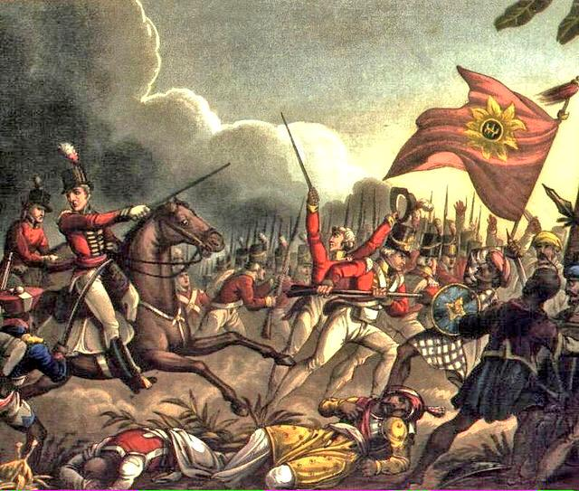

The Second Anglo-Mysore War (1780-84)
The Second Anglo-Mysore War was a conflict between the Kingdom of Mysore and the British East India Company from 1780 to 1784. At the time, Mysore was a key French ally in India, and the conflict between Britain against the French and Dutch in the American Revolutionary War sparked Anglo-Mysorean hostilities in India. The great majority of soldiers on the company side were raised, trained, paid and commanded by the company, not the British government. However, the company's operations were also bolstered by Crown troops sent from Britain, and by troops from Hanover, which was also ruled by Britain's King George III. Some of its results are:-
- As per the Treaty of Mangalore (11 March 1784), both parties agreed to return the captured territories and prisoners to each other
These are the battles that took place in the First Anglo-Mysore War.
- Siege of Tellicherry (30 Dec 1779-18 Jan 1782)
- Battle of Pollilore (10 September 1780)
- Surrender of Arcot (31 Oct 1780)
- Battle of Porto Novo (1 July 1781)
- Battle of Pollilore (27 August 1781)
- Battle of Sholingur (27 September 1781)
- Loss of Cuddalore (4 April 1782)
- Battle of Arnee (2-8 June 1782)
- Capture and Defence of Onore (5 Jan 1783-28 Mar 1784)
- Capture of Annantpore (12 February 1783)
- Battle of Bednore (28 April 1783)
- Siege of Mangalore (18 May 1783-30 Jan 1784)
- Battle of Cuddalore (20 June 1783)
- Capture of Cannanore (14 December 1783)
The Story
Mysore was controlled by Hyder Ali (though he did not have the title of king). Hyder began requesting tribute payments from minor kingdoms on the borders between Maratha and Mysore possessions because he believed the British would help him in an alliance against the Marathas. Hyder refused to fulfill the Marathas' demands for tribute. In response, the Marathas invaded with a 35,000-man force in November 1771. The British did not back Hyder Ali and did not uphold the Treaty of Madras. The Marathas, as a result, conquered Hyder Ali's lands. He had to pay the Marathas 36 lakh rupees and an additional yearly tribute in order to obtain peace.
This was seen by Hyder Ali as a betrayal of trust by the British. So, in order to get revenge on the British, he joined a French coalition. Since the port was Mysore's primary trading outlet, Ali wanted the British to leave. However, the British resisted doing so. Following the French declaration of war against Britain in 1778, the British East India Company made the decision to expel the French from India by seizing the few remaining French territories on the subcontinent, helped by Benjamin Franklin's (1706–1799) reputation as an envoy. In 1778, the company made its debut by seizing Pondicherry and other French colonies. On the Malabar Coast, they subsequently took possession of the French-controlled port of Mahé in 1779. Mahé was crucial from a strategic perspective to Hyder, who used the port to acquire weapons and ammunition from the French. Hyder not only informed the British of his protection of the area but also offered men to help defend it. In addition to the French and Marathas, Hyder also organized a confederacy against the British with the Nizam of Hyderabad and the Marathas.
The War
The Second Anglo-Mysore War broke out in 1780. It was a conflict between the Kingdom of Mysore and the British East India Company from 1780 to 1784. At the time, Mysore was a key French ally in India, and the conflict between Britain and the French and Dutch in the American Revolutionary War sparked Anglo-Mysorean hostilities in India. The great majority of soldiers on the company side were raised, trained, paid, and commanded by the company, not the British government. However, the company's operations were also bolstered by Crown troops sent from Britain and by troops from Hanover, which was also ruled by Britain's King George III (also known as George William Frederick, 1738–1820).
In July 1780, Hyder Ali invaded the Carnatic with an army of 80,000. He descended through the passes of the Eastern Ghats, burning villages as he went, before laying siege to British forts in northern India. The British responded by sending a force of 5,000 to lift the siege. From his camp at Arcot, Hyder Ali sent part of his army, under the command of his eldest son, Tipu Sultan, to intercept a British force from Guntur, under the command of Lieutenant Colonel William Baillie, which had been sent to reinforce Colonel Hector Munro's army 233 kilometers (145 miles) to the north at Madras.
On the morning of September 10, 1780, Baillie's force came under heavy fire from Tipu's guns near Pollilur, where the famous Battle of Pollilur (a.k.a. Pullalur), also known as the Battle of Polilore or Battle of Perambakam, was fought. Baillie formed his force into a long, square formation and began to move slowly forward. However, Hyder Ali's cavalry broke through the formation's front, inflicting many casualties and forcing Baillie to surrender.
The main reason for their defeat was that the Nawab's army used rockets known as "Mysore rockets" during the battle, which were much more advanced than those the British East India Company had previously seen, chiefly because of the use of iron tubes for holding the propellant; this enabled higher thrust and a longer range for the missile (up to 2 km).
By the order of Tipu Sultan, his general Mir Zain-ul-Abidin Shushtari compiled a military manual called Fathul Mujahidin, in which 200 rocket men were assigned to each Mysorean cushoon (brigade). Mysore had 16 to 24 cuirassiers of infantry. The rocket men were trained to launch their rockets at an angle calculated from the diameter of the cylinder and the distance to the target. In addition, wheeled rocket launchers were used in wartime and were capable of launching five to ten rockets almost simultaneously.
Out of the British force of 3,820 men, 336 were killed. The defeat was considered the East India Company's most crushing loss in India up to that time. Munro reacted to the defeat by retreating to Madras, abandoning his baggage, and dumping his cannons in the water tank at Kanchipuram, a small town some 50 kilometers (31 mi) south of Madras. Naravane states the fact that it was a massacre, with only 50 officers and 200 men taken prisoner, including Baille, where he died in 1782.
Hyder Ali resumed the siege at Arcoty, which he eventually took control of on November 3, instead of building on the success and pushing for a conclusive victory at Madras. This choice provided the British with enough time to strengthen their defenses in the south and send soldiers under Sir Eyre Coote's command to Madras.
Despite being beaten at Chidambaram, Sir Eyre Coote went on to defeat Hyder Ali in the engagements at Porto Novo (1 July 1781) and Sholinghur (27 September 1781), while Tipu was compelled to lift the siege of Wandiwash and besiege Vellore in its place. News of war with the Dutch Republic was among the items Lord Macartney (1737–1806), the governor of Madras, brought with him when he arrived in the summer of 1781. The major Dutch stronghold at Negapatam was taken by the British in November 1781, following a three-week siege against fortifications that included 2,000 of Hyder Ali's soldiers. Macartney had ordered the capture of Dutch outposts in India. Given that the triumph was made possible in part by British naval backing, Hyder Ali recognized that he would never entirely defeat a nation that controlled the sea.
On February 18, 1782, Tipu also prevailed over Colonel Braithwaite (1739–1803) at Annagudi, close to Tanjore. 100 Europeans, 300 cavalry, 1400 sepoys, and 10 field pieces made up this force. Tipu gained control of every weapon and imprisoned the whole unit. Tipu conquered Chittur from the British in December 1781. Tipu gained excellent military experience from these actions. Both Tipu Sultan and Hyder Ali formed ties with Ali Raja Bibi Junumabe II and the Mappila Muslim population, and they subsequently met Muslim Malays from Malacca who were serving the Dutch.
Company leaders in Bombay moved more soldiers to Tellicherry during the summer of 1782, from where they launched operations against Mysorean possessions in the Malabar. Tipu and a powerful army were dispatched by Hyder Ali to face this menace, and when Tipu learned of Hyder Ali's tragic death from disease in 1782, he had trapped this force at Panianee. The British army received some respite when Tipu abruptly left the area, but Bombay authorities had already deployed more soldiers under the command of General Richard Matthews to the Malabar in late December to relieve it before they were informed of Hyder Ali's passing. They promptly gave Matthews the go-ahead to cross the Western Ghats and capture Bednore after learning this information. Despite the lack of a solid military foundation for the attempt, he felt driven to execute it. After Matthews drove Mysorean soldiers from the Ghats, Bednore capitulated and let him enter. But since Matthews had overextended his supply lines, Tipu quickly surrounded him at Bednore and compelled him to submit. The seventeen other policemen were brought to Seringapatam and then transported to the seclusion of Gopal Drooge's (Kabbaldurga) mountain jail, where they appeared to have been forced into ingesting a fatal poison. When word of a tentative truce between France and Britain reached India in 1783, French backing for the Mysorean war effort was withdrawn.
General James Stuart's army moved from Madras to the east coast to restock besieged strongholds and to contest Cuddalore, where French soldiers had landed and joined forces with Mysore forces. Even though the armies were roughly equal in number, Stuart assaulted Cuddalore. The French fleet of the Baillie de Suffren chased the British navy off while also landing men to help defend Cuddalore. The siege was nevertheless lifted when news of a tentative peace between France and Britain reached the public. General Stuart was finally summoned and sent back to England because of his disagreements with Lord Macartney.
In March 1783, the British took control of Mangalore, but Tipu sent his main force and, after retaking Bednore, besieged and finally took control of the city. At the same time, forces from Stuart's army were combined with Colonel William Fullarton's in the Tanjore district. From there, Fullarton invaded Coimbatore with minimal opposition after taking control of the citadel at Palghat in November.
As a result, the British wanted to resolve the dispute as well, and the British government instructed the company to make peace with Mysore. The Treaty of Mangalore was the outcome, and it restored the status quo ante bellum (Latin for "the position as it existed before the war") under conditions that company officials, such as Warren Hastings (1732–1818), regarded as very unfavorable.
The Treaty of Mangalore (1784)
On March 11, 1784, the Treaty of Mangalore was signed, officially ending the war and restoring the pre-bellum situation. The war with the Marathas was put to an end by the Treaty of Gajendragad in April 1787.
The great advantage of the treaty to Tipu was the psychological impact of the actual treaty on the British. The Commissioner for the British East India Company in Madras had to go to Mangalore, a recent reconquest of Tipu's, on the opposite coast of India, to sign the treaty. The humiliation of the Treaty (coupled with the recent loss of the Thirteen Colonies, in America) made the British determined to defeat Tipu.
The Treaty of Mangalore in Britain was seen by many as the beginning of the end of the British East India Company. As a result, stock prices in the Company dived and the British East India Company began to fail. This was of great concern to the British government since its trade represented a sixth of the British national income. It was decided to fix the problems through what is now called Pitt's India Act. This act solved the issues of corruption and it invested powers in the Governor-General to act in the interest of King and Country to stop an issue like the Treaty of Mangalore from happening again.
The Wars
The following are the easy links to Wars for quick exploring:-
The Battle of Plassey The Battle of Buxar Anglo-Mysore War 1 Anglo-Mysore War 2 Anglo-Mysore War 3 Anglo-Mysore War 4